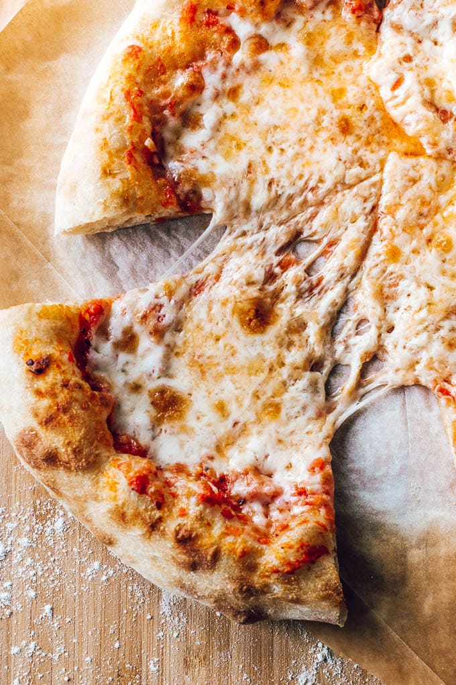

Pizza

Description
Making homemade pizza dough can sound like a lot of work, but it’s so worth the bragging rights. The dough itself requires few ingredients and just a little bit of rising and rest time. While you wait for the dough to be ready, you can get to work prepping your tomato sauce, chopping fresh vegetables, or grating the cheese you’ll put on top. Bake for 15 minutes, garnish with basil (or, let’s be real, more cheese), and enjoy showing off your way-better-than-takeout creation.
Ingredients
- 1 package (1/4 ounce) active dry yeast
- teaspoon sugar
- 1-1/4 cups warm water (110° to 115°)
- 1/4 cup canola oil
- 1 teaspoon salt
- 3-1/2 to 4 cups all-purpose flour
- 1/2 pound ground beef
- 1 small onion, chopped
- 1 can (15 ounces) tomato sauce
- 3 teaspoons dried oregano
- 1 teaspoon dried basil
- 1 medium green pepper, diced
- 2 cups shredded part-skim mozzarella cheese
Steps
- In large bowl, dissolve yeast and sugar in water; let stand for 5 minutes. Add oil and salt. Stir in flour, 1 cup at a time, until a soft dough forms.
- Turn onto a floured surface; knead until smooth and elastic, 2-3 minutes. Place in a greased bowl, turning once to grease the top. Cover and let rise in a warm place until doubled, about 45 minutes. Meanwhile, cook beef and onion over medium heat until beef is no longer pink, breaking meat into crumbles; drain.
- Punch down dough; divide in half. Press each half into a greased 12-in. pizza pan. Combine the tomato sauce, oregano and basil; spread over each crust. Top with beef mixture, green pepper and cheese.
- Bake at 400° for 25-30 minutes or until crust is lightly browned.